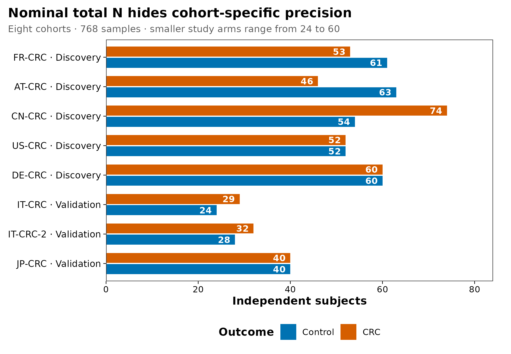
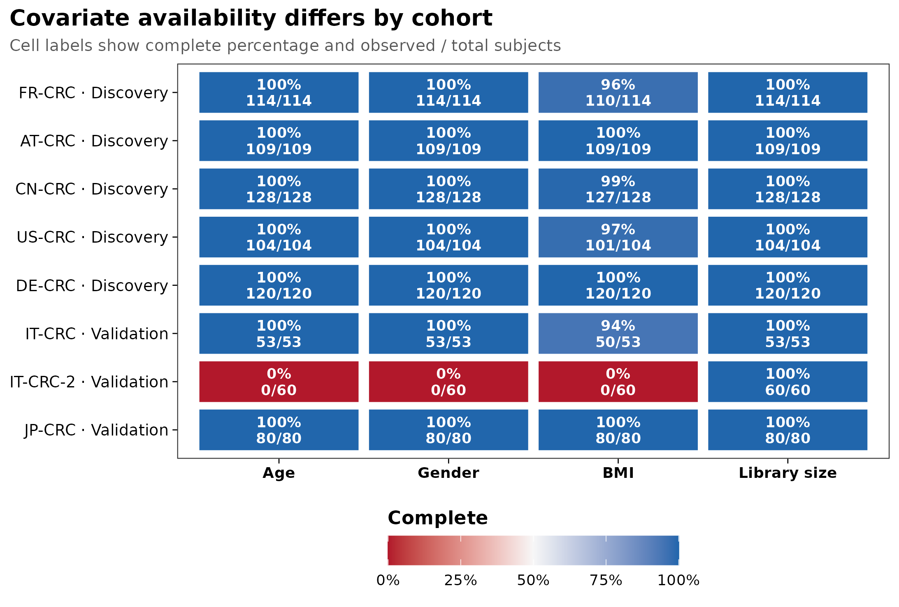
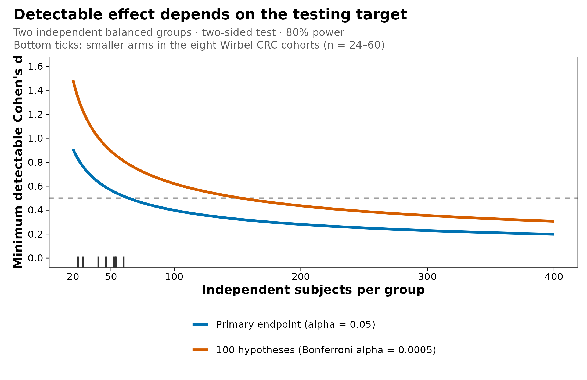
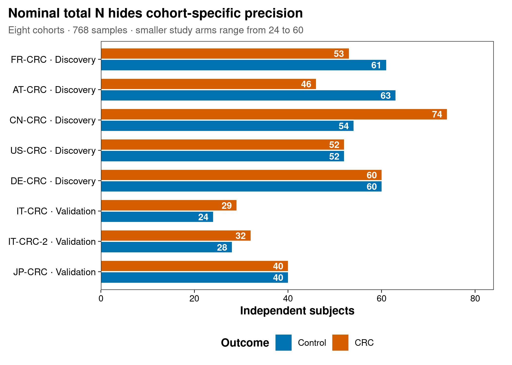
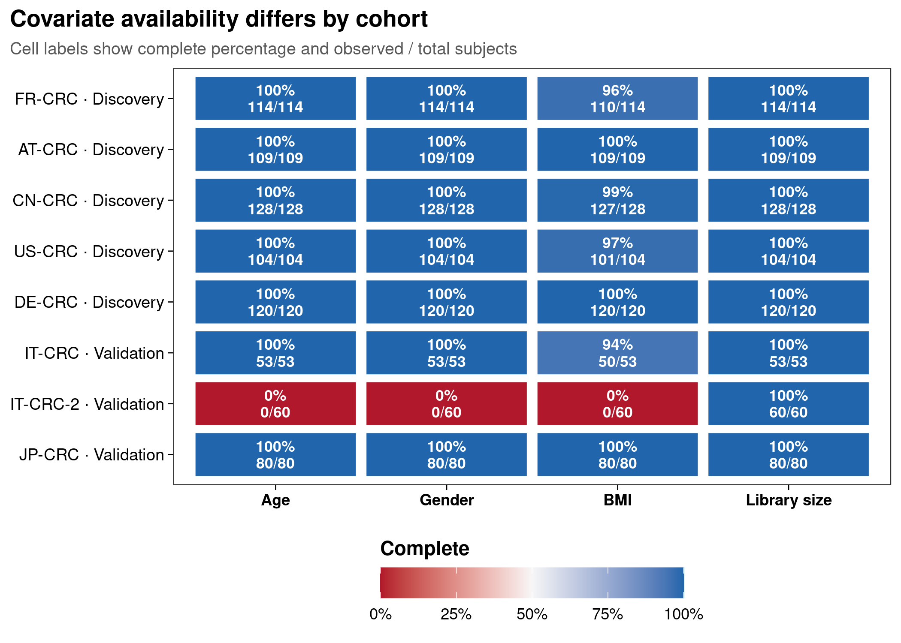
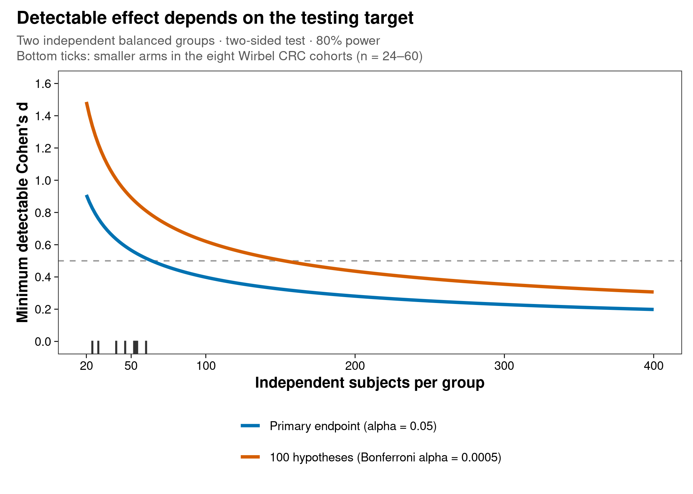

options(timeout = 600)
base_url <- "https://raw.githubusercontent.com/petemeng/metagenomics-best-practices/e219a2cd01609cc208a89e291cbd363ed7f2fbd8/"
files <- read.delim(paste0(base_url, "examples/03/files.tsv"))
for (i in seq_len(nrow(files))) {
path <- files$path[i]
dir.create(dirname(path), recursive = TRUE, showWarnings = FALSE)
if (!file.exists(path)) {
download.file(paste0(base_url, files$source[i]), path, mode = "wb")
}
}研究设计、样本量与统计效力
学习目标：把“计划测多少例”拆成可审计的独立实验单位、主要终点、队列/批次结构、协变量完整度、最小有意义效应和验证方案。
真实数据：Wirbel 等 CRC 跨队列研究公开的 8 个队列、768 个 CRC/对照样本；本文使用队列与临床元数据，不使用虚构菌群丰度。
预计资源：普通笔记本约 1 分钟，内存低于 500 MB；效力曲线是设计敏感性分析，不是从 metadata 估计的疾病效应。
提示总样本量增加，为什么主要效应仍可能不可识别
先确定独立实验单位与主要终点，再估计效力；增加同一人的重复样本，不能替代增加受试者。
多少独立样本，才足以回答研究问题？
研究设计不只属于 Methods。它决定论文中的每张结果图能否被解释。
Wirbel 等在发现阶段整合 5 个 CRC 队列，又把 3 个未参与发现的队列留作独立验证；论文 Figure 3 与 Figure 5 的价值不只是 AUC 高低，而是检验疾病 signature 能否跨研究迁移 (Wirbel 等 2019年)。公开 metadata 可以进一步说明队列规模、协变量缺失与效力之间的关系：
图 图 3.1 显示总数接近平衡，并不意味着每个队列都同样有力：单个设计臂从 24 到 74 人不等。图 图 3.2 进一步显示，公开的 IT-CRC-2 metadata 中年龄、性别和 BMI 均不可用。图 图 3.3 则把这些真实样本量放进一个明确受限的规划近似：主要终点、显著性水平或多重检验目标一变，效力也随之改变。
重要总样本量不是有效样本量
768 samples 不能自动替代“8 个独立队列、16 个病例—对照设计臂”。队列内检验受较小设计臂限制；跨队列模型还要为中心异质性、协变量缺失和外部验证预留信息。把全部样本打散后随机分训练集和测试集，会让同一队列的技术与人群特征同时进入两边。
总样本量增加，为什么主要效应仍可能不可识别？
若病例全部来自一个中心、对照全部来自另一个中心，再多测样本也不能从当前设计分离疾病与中心效应。先检查每个队列或关键批次内是否有目标比较，再讨论统计效力。重复采样有助于估计个体变化，但它增加的信息取决于个体内相关性，不能按新增独立受试者计算。
本例部分队列缺少整列临床变量。把所有模型限制为完整病例会同时改变样本数和目标人群；使用更复杂的模型并不能恢复从未测量的信息。规划时应围绕一个主要终点给出最小有意义效应，再对样本失访、缺失与队列异质性做情景分析，而不是从观察到的显著性反推“样本量足够”。
下载本例数据与分析代码
数据与代码清单列出了本例的输入表、分析脚本和环境文件（约 0.0 MiB）。本清单不含原始 FASTQ 或大型数据库；是否需要它们取决于下文的分析起点。清单中的已计算结果仅供核对；读取结果表不等于重新运行统计模型或上游工具。
在新建文件夹中运行下面的 R 代码，下载完成后即可按正文中的相对路径读取文件。需要核验文件版本时，可使用带完整性检查的下载脚本。
先确认系统环境与版本来源
环境配置与完整运行说明
首次运行安装轻量依赖：
install.packages(c("ggplot2", "scales", "digest", "knitr"))本文执行时直接读取已提交的小表 data/small/03-crc-design-audit.tsv。它由 Zenodo 记录 3517209 v1.0 的 meta_all.tsv 确定性生成。若要从公开源重建：
mkdir -p data/raw data/small results
curl -fL \
"https://zenodo.org/records/3517209/files/meta_all.tsv?download=1" \
-o data/raw/meta_all.tsv
echo "da18b10fdabae6308329e80b73991f84 data/raw/meta_all.tsv" \
| md5sum -c -
Rscript scripts/prepare_article03_data.R \
data/raw/meta_all.tsv \
data/small/03-crc-design-audit.tsv \
results/03-study-design-summary.json下面的依赖、随机种子和作图函数均在正文中定义：
library(ggplot2)
library(scales)
library(digest)
library(knitr)
set.seed(20260719)
stopifnot(
digest(
"data/small/03-crc-design-audit.tsv",
algo = "sha256",
file = TRUE
) == "7bdbd41dbdbec761462b2686650cb3e73aa656552d2f031838c6657c13209d8a"
)
pal_pub <- c(
"#0072B2", "#D55E00", "#009E73", "#CC79A7",
"#E69F00", "#56B4E9", "#F0E442", "#999999"
)
scale_color_pub <- function(...) {
ggplot2::scale_color_manual(values = pal_pub, ...)
}
scale_fill_pub <- function(...) {
ggplot2::scale_fill_manual(values = pal_pub, ...)
}
theme_pub <- function(base_size = 12) {
ggplot2::theme_bw(base_size = base_size, base_family = "sans") +
ggplot2::theme(
panel.grid = ggplot2::element_blank(),
axis.text = ggplot2::element_text(color = "black"),
axis.ticks = ggplot2::element_line(color = "black", linewidth = 0.3),
legend.key = ggplot2::element_blank(),
legend.background = ggplot2::element_rect(
fill = scales::alpha("white", 0.7),
color = NA
),
plot.title.position = "plot"
)
}
save_pub <- function(
plot,
file_base,
width = 160,
height = 105,
units = "mm",
dpi = 300
) {
dir.create(
dirname(file_base),
recursive = TRUE,
showWarnings = FALSE
)
ggplot2::ggsave(
paste0(file_base, ".pdf"),
plot,
width = width,
height = height,
units = units,
device = grDevices::cairo_pdf
)
ggplot2::ggsave(
paste0(file_base, ".png"),
plot,
width = width,
height = height,
units = units,
dpi = dpi,
bg = "white"
)
ggplot2::ggsave(
paste0(file_base, ".tiff"),
plot,
width = width,
height = height,
units = units,
dpi = dpi,
compression = "lzw",
bg = "white"
)
invisible(plot)
}读取 16 个真实设计臂
先写一句能被计算的主要问题
Estimand（目标估计量）是研究真正想估计的量。宏基因组研究中，下面四句话需要四套不同的效力方案：
- CRC 与 control 的 Shannon diversity 平均差；
- 病例状态对 Bray–Curtis 群落差异解释的变异比例；
- 一个预先指定物种的 log abundance ratio；
- 一组物种在完全未见队列中的预测 AUC。
“比较两组菌群是否不同”没有指定数据对象、终点、统计模型或最小有意义效应，因此也没有唯一的样本量答案。STORMS 报告规范要求把研究设计、样本处理、生信和统计信息放在同一条可追溯链上 (Mirzayi 等 2021年)。
design <- read.delim(
"data/small/03-crc-design-audit.tsv",
check.names = FALSE,
stringsAsFactors = FALSE,
na.strings = c("", "NA")
)
required_columns <- c(
"Study", "Role", "Group", "N",
"Age_observed", "Age_complete_pct",
"Gender_observed", "Gender_complete_pct",
"BMI_observed", "BMI_complete_pct",
"Library_observed", "Library_complete_pct"
)
stopifnot(
nrow(design) == 16L,
all(required_columns %in% names(design)),
!anyDuplicated(design[c("Study", "Group")]),
setequal(design$Group, c("Control", "CRC")),
sum(design$N) == 768L,
sum(design$N[design$Group == "CRC"]) == 386L,
sum(design$N[design$Group == "Control"]) == 382L
)
kable(design[, c(
"Study", "Role", "Group", "N",
"Age_observed", "Gender_observed",
"BMI_observed", "Library_median_m_reads"
)])| Study | Role | Group | N | Age_observed | Gender_observed | BMI_observed | Library_median_m_reads |
|---|---|---|---|---|---|---|---|
| FR-CRC | Discovery / meta-analysis | Control | 61 | 61 | 61 | 59 | 29.84 |
| FR-CRC | Discovery / meta-analysis | CRC | 53 | 53 | 53 | 51 | 24.51 |
| AT-CRC | Discovery / meta-analysis | Control | 63 | 63 | 63 | 63 | 24.76 |
| AT-CRC | Discovery / meta-analysis | CRC | 46 | 46 | 46 | 46 | 27.78 |
| CN-CRC | Discovery / meta-analysis | Control | 54 | 54 | 54 | 54 | 22.64 |
| CN-CRC | Discovery / meta-analysis | CRC | 74 | 74 | 74 | 73 | 18.41 |
| US-CRC | Discovery / meta-analysis | Control | 52 | 52 | 52 | 52 | 32.03 |
| US-CRC | Discovery / meta-analysis | CRC | 52 | 52 | 52 | 49 | 31.52 |
| DE-CRC | Discovery / meta-analysis | Control | 60 | 60 | 60 | 60 | 16.21 |
| DE-CRC | Discovery / meta-analysis | CRC | 60 | 60 | 60 | 60 | 31.87 |
| IT-CRC | Independent validation | Control | 24 | 24 | 24 | 22 | 18.88 |
| IT-CRC | Independent validation | CRC | 29 | 29 | 29 | 28 | 19.74 |
| IT-CRC-2 | Independent validation | Control | 28 | 0 | 0 | 0 | 18.33 |
| IT-CRC-2 | Independent validation | CRC | 32 | 0 | 0 | 0 | 19.90 |
| JP-CRC | Independent validation | Control | 40 | 40 | 40 | 40 | 23.30 |
| JP-CRC | Independent validation | CRC | 40 | 40 | 40 | 40 | 24.35 |
每行是一个队列中的一个病例—对照设计臂。公开表没有菌群特征，因此这里不估计“CRC 的微生物效应”；它只回答设计是否拥有足够、完整且可分层的信息。
注意把样本管数当独立 N
纵向样本、左右侧样本、同笼动物或技术重复没有写入模型，会低估标准误并夸大显著性。先画 subject—sample—batch 层级表，再决定随机效应、配对检验和置换限制。
把总样本量拆回队列内比较
独立实验单位决定真正的 N
- Experimental unit（实验单位）：可以独立接受处理、暴露或抽样的最小单位；
- Observation（观测）：实际进入测序和分析的一份样本；
- Technical replicate（技术重复）：对同一生物材料重复提取、建库或测序。
同一位受试者的两个时间点是两个观测，但通常仍只有一个独立受试者。若处理施加在笼位，实验单位可能是笼而不是动物。技术重复能帮助估计测量误差，却不能把 20 位受试者变成 40 个独立重复。
CRC 公开 metadata 的 Sample_ID 在这 768 个样本中唯一，适合审计病例—对照横断面设计；但它不能证明所有未来数据都没有家庭、中心、纵向或重复采样结构。自己的 metadata 必须显式提供 SubjectID、Site、Batch、Timepoint 和配对关系。
样本量、测序深度和发现目标是三种不同预算
在固定总预算下，增加独立受试者通常提高对人群差异的覆盖；增加单样本测序深度主要提高低丰度物种、基因和组装对象的可见性。两者不能互相完全替代：
- read-based 常见物种或群落终点可能先受个体异质性限制；
- 稀有物种、低丰度功能或 strain SNV 可能先受覆盖度限制；
- MAG 和病毒发现还受群落复杂度、目标丰度与组装连续性限制。
因此，第 04 篇会单独处理“测多深”；本节只讨论独立样本数与设计信息。
study_order <- unique(design$Study)
control_rows <- design[design$Group == "Control", , drop = FALSE]
control_rows <- control_rows[
match(study_order, control_rows$Study),
,
drop = FALSE
]
crc_rows <- design[design$Group == "CRC", , drop = FALSE]
crc_rows <- crc_rows[
match(study_order, crc_rows$Study),
,
drop = FALSE
]
stopifnot(identical(control_rows$Study, crc_rows$Study))
cohort_counts <- data.frame(
Study = study_order,
Role = control_rows$Role,
Control = control_rows$N,
CRC = crc_rows$N,
Smaller_arm = pmin(control_rows$N, crc_rows$N),
Total = control_rows$N + crc_rows$N,
stringsAsFactors = FALSE
)
stopifnot(
min(cohort_counts$Smaller_arm) == 24L,
max(cohort_counts$Smaller_arm) == 60L,
stats::median(cohort_counts$Smaller_arm) == 49
)
kable(cohort_counts)| Study | Role | Control | CRC | Smaller_arm | Total |
|---|---|---|---|---|---|
| FR-CRC | Discovery / meta-analysis | 61 | 53 | 53 | 114 |
| AT-CRC | Discovery / meta-analysis | 63 | 46 | 46 | 109 |
| CN-CRC | Discovery / meta-analysis | 54 | 74 | 54 | 128 |
| US-CRC | Discovery / meta-analysis | 52 | 52 | 52 | 104 |
| DE-CRC | Discovery / meta-analysis | 60 | 60 | 60 | 120 |
| IT-CRC | Independent validation | 24 | 29 | 24 | 53 |
| IT-CRC-2 | Independent validation | 28 | 32 | 28 | 60 |
| JP-CRC | Independent validation | 40 | 40 | 40 | 80 |
8 个队列合计 768 人，但较小设计臂中位数只有 49 人，范围为 24–60 人。队列内 effect estimate 的不确定性首先由这些数字决定，而不是由合并后的 768 决定。
从“合并后显著”升级到“队列内可识别”
Wirbel 研究最值得保留的设计思想是发现队列与外部验证队列分开 (Wirbel 等 2019年)。今天实施时应再增加四层审计：
- 预注册主要终点。 明确是 community-level、feature-level 还是 predictive endpoint，并指定效应量尺度。
- 把 Study 当作设计结构。 先估计队列内效应，再做 meta-analysis；或在分层模型中显式建模 study，而不是把 768 个样本视为同分布。
- 把缺失写进 estimand。 若某队列没有年龄/BMI，决定是使用未调整的队列内效应、分层调整、插补，还是限制目标总体；每种选择回答的问题不同。
- 把验证集锁死。 特征筛选、预处理、超参数和阈值只能在训练数据中确定；真正未见队列只能在管线冻结后打开。
注意用一个通用数字回答所有终点
“每组 30 个就够”没有统计意义。α diversity、PERMANOVA、差异物种、MAG 发现和外部 AUC 的效力函数不同；至少要给主要终点、最小效应、方差/距离、alpha、power 和不可用比例。

检查协变量能否进入预定模型
平衡、分层与混杂决定参数能否被识别
病例与对照数量相近，只解决了一个维度。还要问：
- 病例和对照是否分布在相同提取板、建库批次和测序 lane？
- 年龄、性别、BMI、用药和采样流程是否在组间可比较？
Disease是否与Study、Country或Batch完全重合？- 每个队列是否同时包含两组，允许估计队列内疾病差异？
如果所有病例都在 batch A、所有对照都在 batch B，模型 feature ~ disease + batch 的两个系数不可分。增加 reads 或事后使用 batch-correction 软件都不能创造缺失的交叉设计。
covariate_spec <- data.frame(
Variable = c("Age", "Gender", "BMI", "Library size"),
Observed_column = c(
"Age_observed",
"Gender_observed",
"BMI_observed",
"Library_observed"
),
stringsAsFactors = FALSE
)
completeness <- do.call(
rbind,
lapply(study_order, function(study) {
rows <- design[design$Study == study, , drop = FALSE]
total <- sum(rows$N)
observed <- vapply(
covariate_spec$Observed_column,
function(column) sum(rows[[column]]),
numeric(1)
)
data.frame(
Study = study,
Role = unique(rows$Role),
Variable = covariate_spec$Variable,
Observed = observed,
Total = total,
Complete_pct = 100 * observed / total,
stringsAsFactors = FALSE
)
})
)
missing_totals <- data.frame(
Variable = covariate_spec$Variable,
Missing = vapply(
covariate_spec$Observed_column,
function(column) sum(design$N - design[[column]]),
numeric(1)
),
stringsAsFactors = FALSE
)
stopifnot(
identical(
missing_totals$Missing,
c(60, 60, 71, 0)
),
all(
completeness$Complete_pct[
completeness$Study == "IT-CRC-2" &
completeness$Variable != "Library size"
] == 0
),
all(
completeness$Complete_pct[
completeness$Study == "IT-CRC-2" &
completeness$Variable == "Library size"
] == 100
)
)
kable(missing_totals)| Variable | Missing | |
|---|---|---|
| Age_observed | Age | 60 |
| Gender_observed | Gender | 60 |
| BMI_observed | BMI | 71 |
| Library_observed | Library size | 0 |
年龄缺失 60 例，性别缺失 60 例，BMI 缺失 71 例。若强制在全体样本中拟合 feature ~ disease + age + sex + BMI + study，complete-case analysis 会整队列删除 IT-CRC-2，从而改变“外部验证”的目标人群。
不要把测序量完整误解为协变量完整
本文 768 例的 Library_Size 全部可用，但年龄、性别和 BMI 并非如此。测序量完整只能说明一个技术字段存在，不能替代临床混杂变量。反过来，把 library size 机械加入每一个下游模型也不一定正确：相对丰度、offset、下采样、presence/absence 和 read-depth QC 对测序量的处理不同，必须服从数据对象和统计模型。
注意把 pilot 点估计当真效应
小型 pilot 的效应常被高估。规划时同时使用最小有意义效应、pilot 置信区间和保守情景；不要只选择能让预算看起来足够的数字。
注意忽略多重检验和 prevalence
物种表中 500 个特征不等于 500 个同等有力的检验。稀有特征的有效样本数更低，零值、离散度和相关结构会改变 power 与 FDR；应按预过滤规则和计划 DA 方法模拟。
注意complete-case analysis 偷换目标人群
如果缺失集中在一个队列，完整病例分析不是随机少几个人，而是可能删除整个中心。需要报告每个队列的缺失模式，并说明插补、分层调整或未调整 meta-analysis 各自的 estimand。

用两个 alpha 情景计算最小可检测差异
下面只考虑一个理想化问题：
- 两个独立组；
- 每组样本量相等；
- 连续、近似正态的主要终点；
- 双侧检验；
- 目标 power = 80%；
- 标准差归一为 1，因此差异是 Cohen’s \(d\)。
alpha_scenarios <- data.frame(
Scenario = c(
"One primary endpoint",
"100 confirmatory hypotheses"
),
Alpha = c(0.05, 0.05 / 100),
Label = c(
"Primary endpoint (alpha = 0.05)",
"100 hypotheses (Bonferroni alpha = 0.0005)"
),
stringsAsFactors = FALSE
)
n_grid <- seq(20, 400, by = 2)
target_power <- 0.80
power_sensitivity <- do.call(
rbind,
lapply(seq_len(nrow(alpha_scenarios)), function(i) {
alpha_value <- alpha_scenarios$Alpha[i]
data.frame(
N_per_group = n_grid,
Detectable_d = vapply(
n_grid,
function(n) {
stats::power.t.test(
n = n,
delta = NULL,
sd = 1,
sig.level = alpha_value,
power = target_power,
type = "two.sample",
alternative = "two.sided"
)$delta
},
numeric(1)
),
Scenario = alpha_scenarios$Scenario[i],
Label = alpha_scenarios$Label[i],
Alpha = alpha_value,
stringsAsFactors = FALSE
)
})
)
curve_checks <- split(
power_sensitivity$Detectable_d,
power_sensitivity$Scenario
)
stopifnot(all(vapply(
curve_checks,
function(x) all(diff(x) < 0),
logical(1)
)))
detectable_at <- function(n, alpha_value) {
stats::power.t.test(
n = n,
delta = NULL,
sd = 1,
sig.level = alpha_value,
power = target_power,
type = "two.sample",
alternative = "two.sided"
)$delta
}
sensitivity_landmarks <- data.frame(
N_per_group = c(24, 60, 24, 60),
Alpha = c(0.05, 0.05, 0.0005, 0.0005)
)
sensitivity_landmarks$Detectable_d <- mapply(
detectable_at,
sensitivity_landmarks$N_per_group,
sensitivity_landmarks$Alpha
)
kable(sensitivity_landmarks, digits = 3)| N_per_group | Alpha | Detectable_d |
|---|---|---|
| 24 | 0.05 | 0.826 |
| 60 | 0.05 | 0.516 |
| 24 | 0.00 | 1.336 |
| 60 | 0.00 | 0.810 |
在理想化单一主要终点下，每组 \(n=24\) 只能以 80% power 检出约 \(d=0.83\) 的差异；每组 \(n=60\) 的边界约为 \(d=0.52\)。若把 100 个确认性假设用 Bonferroni 作为保守规划边界，对应数值升至约 1.34 和 0.81。
这些数值不应直接当作物种差异丰度研究的正式样本量。它们只证明：同一个 N 在不同主要终点和错误控制目标下，代表完全不同的可检测范围。

把失访、质控淘汰和分层写进招募数
微生物组效力必须与终点和数据生成过程匹配
两组连续终点可用标准化均值差 \(d\) 做初步规划；但微生物组表具有稀疏、过度离散、组成型约束、特征相关和不等测序深度。差异丰度的真实效力通常需要从 pilot 表拟合分布，再按计划模型重复模拟 (La Rosa 等 2012年; Chen 2020年)。
若主要终点是 PERMANOVA，效力取决于组内距离、目标群落效应、距离度量、协变量和合法置换结构；不能把普通 t 检验的样本量直接搬过来。Kelly 等提出的距离矩阵模拟框架正是为这一类问题服务 (Kelly 等 2015年)。Ferdous 等的综述也强调，样本量计算应围绕可检验假设，而不是寻找一个适用于所有微生物组研究的固定数字 (Ferdous 等 2022年)。
深入：为什么不能用研究结束后的 observed power 挽救阴性结果
研究结束后把观测效应和 P 值代回效力公式，得到的 observed power 通常只是 P 值的单调变换。它不能区分：
- 真效应接近零；
- 样本量不足；
- 终点噪声过大；
- 批次或混杂掩盖了效应；
- 分析方法与数据分布不匹配。
若模型估计需要 \(n_\text{analysis}\) 个可分析受试者，预计总不可用比例为 \(q\)，最低招募数为：
\[ n_\text{recruit} = \left\lceil \frac{n_\text{analysis}}{1-q} \right\rceil . \]
analysis_target <- 60
loss_scenarios <- c(
"5% unusable" = 0.05,
"10% unusable" = 0.10,
"15% unusable" = 0.15
)
recruitment <- data.frame(
Scenario = names(loss_scenarios),
Analysis_target_per_group = analysis_target,
Expected_unusable = unname(loss_scenarios),
Recruit_per_group = ceiling(
analysis_target / (1 - unname(loss_scenarios))
),
stringsAsFactors = FALSE
)
kable(recruitment)| Scenario | Analysis_target_per_group | Expected_unusable | Recruit_per_group |
|---|---|---|---|
| 5% unusable | 60 | 0.05 | 64 |
| 10% unusable | 60 | 0.10 | 67 |
| 15% unusable | 60 | 0.15 | 71 |
不可用比例应包括撤回、metadata 缺失、DNA 量不足、建库失败、去宿主后微生物 reads 不足和预先定义的 QC 淘汰；不能在结果出来后临时改变分母。
正式效力分析的升级路线
| 主要终点 | 需要的 pilot 信息 | 建议规划方式 |
|---|---|---|
| 单一连续指标 | 组内 SD、最小有意义差异 | 参数公式 + 多情景敏感性 |
| PERMANOVA | 组内距离、目标 \(\omega^2\)、置换结构 | 距离矩阵模拟 |
| 差异丰度 | prevalence、均值、离散度、零值、相关结构 | 拟合 pilot 后重复模拟 |
| 纵向变化 | 个体内相关、时间点、失访模式 | mixed-model simulation |
| 外部预测 | 队列数、prevalence、异质性、目标 AUC/校准 | leave-one-study-out simulation |
警告先做设计可识别性，再做 power
如果疾病与批次完全混杂，或所有验证样本在分析前已参与特征筛选，再大的名义 power 也不能恢复目标效应。样本量公式假定设计和检验本身有效；它不会修复不可识别参数、数据泄漏或错误实验单位。
注意随机切分冒充外部验证
同一队列随机拆分会共享采样、提取、测序和人群特征。跨队列问题应按 Study 留出；所有特征选择和调参都留在训练队列内部。
报告样本量依据、排除流程和协变量
下面模板与本文实际执行对象一致：
Study-design audit and planning sensitivity. We reconstructed the case-control design from the public metadata accompanying the Wirbel et al. colorectal cancer metagenome meta-analysis (Zenodo record 3517209, version 1.0;
meta_all.tsv; MD5da18b10fdabae6308329e80b73991f84; CC BY 4.0). Eight prespecified cohorts containing both colorectal cancer and control samples were retained, yielding 768 unique subjects (386 cases and 382 controls). Cohort-specific arm sizes ranged from 24 to 74 subjects. Availability of age, sex, BMI and sequencing library size was summarized within each cohort and outcome group; 60 age values, 60 sex values and 71 BMI values were missing, whereas library size was complete. TheIT-CRC-2public metadata contained no age, sex or BMI values. As an illustrative prospective sensitivity analysis—not an estimate of a microbiome disease effect—we calculated the minimum detectable standardized mean difference for two independent balanced groups using a two-sided t-test, 80% power, and either alpha = 0.05 for one primary endpoint or alpha = 0.0005 as a conservative Bonferroni boundary for 100 confirmatory hypotheses. Calculations and figures were generated in R 4.4.1 with a fixed seed of 20260719 and exported as PDF and 300-ppi PNG/TIFF files.
若用于自己的研究，还必须补充：
- 招募来源、纳入/排除标准和独立实验单位；
- 主要/次要终点及最小有意义效应；
- 随机化、配对、阻断和 batch 平衡方案；
- pilot 数据来源、方差/距离/分布参数及软件版本；
- 多重检验、失访和 QC 淘汰假设；
- 预注册的训练、验证和最终测试边界。
换到自己的研究中，先检查哪些条件？
最低 metadata 约定
每行一个观测，至少提供：
| 字段 | 含义 | 不能省略的原因 |
|---|---|---|
SampleID |
测序样本唯一标识 | 对齐 FASTQ、谱表和 QC |
SubjectID |
独立受试者/实验单位 | 识别配对和伪重复 |
Group |
主要暴露或结局 | 定义主要比较 |
Study / Site |
队列或中心 | 分层、meta-analysis、外部验证 |
Batch / Plate / Lane |
实验技术结构 | 检查混杂与阻断 |
Timepoint |
纵向时间 | 定义基线与重复测量 |
| 核心协变量 | 年龄、性别、BMI、用药等 | 控制预先指定的混杂 |
LibrarySize |
QC 后 reads 或目标层 reads | 审计测序深度与可用性 |
开工前完成五张表
table(Group, Study)：每个队列是否同时有各组；table(Group, Batch)：疾病与实验批次是否重合；- 每个
SubjectID的观测数：谁是独立 N； Study × covariate完整度矩阵：调整模型会删除谁；- 主要终点的 power 情景表：效应、方差、alpha、power、失访和招募数。
正式模拟的最小伪代码
set.seed(20260719)
for (n_per_group in c(30, 50, 80, 120)) {
for (simulation_id in seq_len(1000)) {
# 1. 从外部 pilot 拟合的 prevalence、mean、dispersion、
# correlation 和 library-size 分布生成数据
# 2. 按未来方案加入 Study、Batch、pairing 或 longitudinal structure
# 3. 原样执行预过滤、normalization、model 和 FDR procedure
# 4. 记录 primary endpoint 是否检出，以及 empirical FDR
}
}模拟脚本必须使用未来计划中的完整分析管线。若只模拟正态数据，却计划使用稀疏组成型物种表、队列分层和 BH FDR，得到的 power 不对应真正研究。
图中应该保留哪些信息？
队列内病例—对照平衡图
balance_long <- rbind(
data.frame(
Study = cohort_counts$Study,
Role = cohort_counts$Role,
Group = "Control",
N = cohort_counts$Control
),
data.frame(
Study = cohort_counts$Study,
Role = cohort_counts$Role,
Group = "CRC",
N = cohort_counts$CRC
)
)
balance_long$Study_label <- paste0(
balance_long$Study,
ifelse(
balance_long$Role == "Discovery / meta-analysis",
" · Discovery",
" · Validation"
)
)
study_labels <- unique(balance_long$Study_label)
balance_long$Study_label <- factor(
balance_long$Study_label,
levels = rev(study_labels)
)
balance_long$Group <- factor(
balance_long$Group,
levels = c("Control", "CRC")
)
p_cohort_balance <- ggplot(
balance_long,
aes(N, Study_label, fill = Group)
) +
geom_col(
position = position_dodge(width = 0.76),
width = 0.68,
orientation = "y"
) +
geom_text(
aes(x = N - 1.0, label = N),
position = position_dodge(width = 0.76),
hjust = 1,
size = 3.2,
fontface = "bold",
color = "white"
) +
scale_fill_manual(
values = c("Control" = "#0072B2", "CRC" = "#D55E00"),
drop = FALSE
) +
scale_x_continuous(
limits = c(0, 84),
breaks = seq(0, 80, by = 20),
expand = expansion(mult = c(0, 0))
) +
labs(
title = "Nominal total N hides cohort-specific precision",
subtitle = "Eight cohorts · 768 samples · smaller study arms range from 24 to 60",
x = "Independent subjects",
y = NULL,
fill = "Outcome"
) +
theme_pub(base_size = 11) +
theme(
plot.title = element_text(face = "bold", size = 13),
plot.subtitle = element_text(color = "grey35", size = 9.5),
axis.title = element_text(face = "bold"),
axis.text.y = element_text(size = 9.2),
legend.position = "bottom",
legend.title = element_text(face = "bold"),
plot.margin = margin(8, 18, 8, 8)
)
p_cohort_balance
save_pub(
p_cohort_balance,
"figures/03-cohort-balance",
width = 180,
height = 125
)协变量完整度热图
completeness$Study_label <- paste0(
completeness$Study,
ifelse(
completeness$Role == "Discovery / meta-analysis",
" · Discovery",
" · Validation"
)
)
completeness$Study_label <- factor(
completeness$Study_label,
levels = rev(study_labels)
)
completeness$Variable <- factor(
completeness$Variable,
levels = covariate_spec$Variable
)
completeness$Cell_label <- sprintf(
"%.0f%%\n%d/%d",
completeness$Complete_pct,
completeness$Observed,
completeness$Total
)
completeness$Text_color <- ifelse(
completeness$Complete_pct <= 20 |
completeness$Complete_pct >= 80,
"white",
"black"
)
p_covariate_completeness <- ggplot(
completeness,
aes(Variable, Study_label, fill = Complete_pct)
) +
geom_tile(
color = "white",
linewidth = 1.0,
width = 0.96,
height = 0.92
) +
geom_text(
aes(label = Cell_label, color = Text_color),
size = 3.0,
fontface = "bold",
lineheight = 0.92
) +
scale_color_identity() +
scale_fill_gradient2(
low = "#B2182B",
mid = "#F7F7F7",
high = "#2166AC",
midpoint = 50,
limits = c(0, 100),
breaks = c(0, 25, 50, 75, 100),
labels = function(x) paste0(x, "%")
) +
labs(
title = "Covariate availability differs by cohort",
subtitle = "Cell labels show complete percentage and observed / total subjects",
x = NULL,
y = NULL,
fill = "Complete"
) +
theme_pub(base_size = 11) +
theme(
plot.title = element_text(face = "bold", size = 13),
plot.subtitle = element_text(color = "grey35", size = 9.5),
axis.text.x = element_text(face = "bold"),
axis.text.y = element_text(size = 9.2),
legend.position = "bottom",
legend.title = element_text(face = "bold")
) +
guides(fill = guide_colorbar(
title.position = "top",
barwidth = grid::unit(60, "mm")
))
p_covariate_completeness
save_pub(
p_covariate_completeness,
"figures/03-covariate-completeness",
width = 185,
height = 125
)最小可检测差异敏感性曲线
power_sensitivity$Label <- factor(
power_sensitivity$Label,
levels = alpha_scenarios$Label
)
arm_sizes <- cohort_counts[, c("Study", "Smaller_arm")]
power_colors <- c(
"Primary endpoint (alpha = 0.05)" = "#0072B2",
"100 hypotheses (Bonferroni alpha = 0.0005)" = "#D55E00"
)
p_power_sensitivity <- ggplot(
power_sensitivity,
aes(N_per_group, Detectable_d, color = Label)
) +
geom_hline(
yintercept = 0.5,
color = "grey60",
linewidth = 0.5,
linetype = "dashed"
) +
geom_line(linewidth = 1.15) +
geom_rug(
data = arm_sizes,
aes(x = Smaller_arm),
inherit.aes = FALSE,
sides = "b",
color = "grey20",
linewidth = 0.7,
length = grid::unit(3.5, "mm")
) +
scale_color_manual(values = power_colors) +
scale_x_continuous(
breaks = c(20, 50, 100, 200, 300, 400),
limits = c(20, 400)
) +
scale_y_continuous(
breaks = seq(0, 1.6, by = 0.2),
limits = c(0, 1.6)
) +
labs(
title = "Detectable effect depends on the testing target",
subtitle = paste0(
"Two independent balanced groups · two-sided test · 80% power\n",
"Bottom ticks: smaller arms in the eight Wirbel CRC cohorts (n = 24–60)"
),
x = "Independent subjects per group",
y = "Minimum detectable Cohen's d",
color = NULL
) +
theme_pub(base_size = 11) +
theme(
plot.title = element_text(face = "bold", size = 13),
plot.subtitle = element_text(
color = "grey35",
size = 9.3,
lineheight = 1.0
),
axis.title = element_text(face = "bold"),
legend.position = "bottom",
legend.text = element_text(size = 8.8),
plot.margin = margin(8, 8, 13, 12)
) +
guides(color = guide_legend(nrow = 2, byrow = TRUE))
p_power_sensitivity
save_pub(
p_power_sensitivity,
"figures/03-power-sensitivity",
width = 185,
height = 120
)三张图都导出 PDF、300-ppi PNG 和 LZW 压缩 TIFF。图内的队列、分组、轴、图例和统计标注均为英文；Methods 中仍应解释 Discovery、Validation 和 power 情景的定义。
回到最初的问题
- 真正的 N 是独立实验单位数，不是 FASTQ、样本管或技术重复数。
- 8 个队列的 768 例应被看成有层级的设计，而不是一个同分布的大样本。
- 协变量缺失会限制可调整模型，并可能改变目标总体。
- 样本量必须绑定主要终点、最小效应、alpha、power、不可用比例和验证边界。
- t 检验曲线只能作为明确标注的规划近似；PERMANOVA、差异丰度、纵向和外部预测应使用与分析方法匹配的模拟。
参考文献
- Wirbel J, Pyl PT, Kartal E, et al. Meta-analysis of fecal metagenomes reveals global microbial signatures that are specific for colorectal cancer. Nature Medicine. 2019;25:679–689. https://doi.org/10.1038/s41591-019-0406-6
- La Rosa PS, Brooks JP, Deych E, et al. Hypothesis testing and power calculations for taxonomic-based human microbiome data. PLoS ONE. 2012;7:e52078. https://doi.org/10.1371/journal.pone.0052078
- Kelly BJ, Gross R, Bittinger K, et al. Power and sample-size estimation for microbiome studies using pairwise distances and PERMANOVA. Bioinformatics. 2015;31:2461–2468. https://doi.org/10.1093/bioinformatics/btv183
- Chen L. powmic: an R package for power assessment in microbiome case-control studies. Bioinformatics. 2020;36:3563–3565. https://doi.org/10.1093/bioinformatics/btaa197
- Mirzayi C, Renson A, Genomic Standards Consortium, et al. Reporting guidelines for human microbiome research: the STORMS checklist. Nature Medicine. 2021;27:1885–1892. https://doi.org/10.1038/s41591-021-01552-x
- Ferdous T, Jiang L, Dinu I, et al. The rise to power of the microbiome: power and sample size calculation for microbiome studies. Mucosal Immunology. 2022;15:1060–1070. https://doi.org/10.1038/s41385-022-00548-1